프롤로그
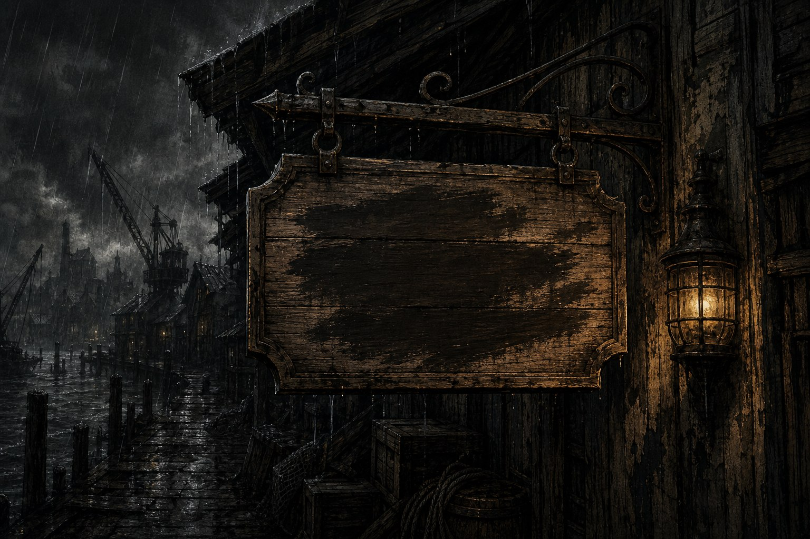
도스크볼 북쪽 부두에서는 사람이 사라진다. 선원이, 일꾼이, 그리고 아이들이. 바다는 잉크빛이고 비는 그칠 줄을 모르고, 누구도 사라진 이들의 이름을 오래 기억하지 않는다. 크로우스풋 전쟁의 화약 냄새가 가신 지 두 해, 그 부두의 낡은 창고에 인력 소개소 간판 하나가 걸렸다. 세이렌 상사. 뒷골목을 지키겠다고 나선, 이 도시에서 가장 우스운 장사였다.
이것은 지키는 일에 관한 이야기다. 아무도 지켜주지 않는 동네에서 자경단을 자처한 넷의 이야기이고, 세계를 구한다는 명분과 아이 하나의 목숨을 저울에 올린 자들의 이야기이며, 그 저울 위에서 끝내 아이의 손을 놓지 않은 사람들의 이야기다. 하늘에서는 검은 비가 내렸고, 바다 밑에서는 무언가가 도시를 향해 다가오고 있었다.
0화 “Back in Business”
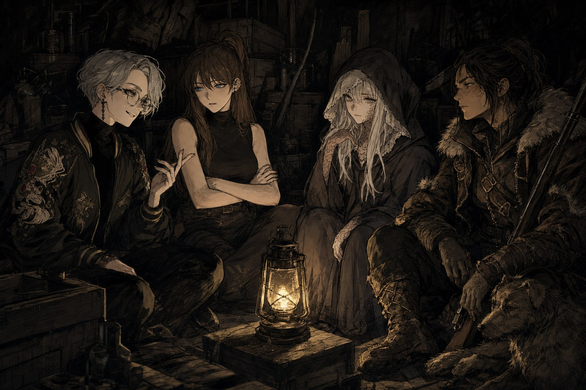
도스크볼 북쪽 부두에, 크로우스풋 전쟁의 화약 냄새가 가신 지도 두 해가 지났다. 부두는 여전히 잉크빛 바다를 등지고 화물창고와 매춘굴과 문신소가 다닥다닥 붙어 있었고, 노동요를 부르며 짐을 나르는 일꾼들 틈으로 밤이면 다른 종류의 짐이 오갔다. 그 뒷골목의 낡은 창고 한 켠에, 누군가 페인트로 갓 눌러쓴 간판 하나가 걸렸다. 세이렌 상사. 인력을 모집한다는 광고였다. 초보 가능, 초기비용 없음, 국적 불문, 경력 불문 — 정직해 보이려 애쓴 문구 뒤에는, 다른 말로는 옮기기 힘든 사정들이 숨어 있었다.
간판을 내건 것은 톰 스테이먼이었다. 브라이트스톤에서 나고 자라 차터홀 대학에 일찍 입학할 만큼 머리가 좋았던 그는, 한때는 판관이 되었어도 이상하지 않을 청년이었다. 그러나 친구가 건넨 첫 한 모금이 모든 것을 바꿔놓았다. 학비를 약값으로 갈아넣고, 협박과 거짓말로 남의 돈을 떼어먹는 재주를 익히는 사이, 톰은 집안의 재산과 함께 이름마저 잃어갔다. 부모가 불에 타 죽고 재산 문서가 흔적도 없이 흩어진 뒤, 그는 부두로 숨어들어 법률을 아는 척 떠들며 하루하루를 이었다. 그러다 혼자서는 큰 건을 못 친다는 걸 깨닫고 위장 회사를 하나 세웠다. 세이렌이라는 이름을 붙인 건, 배를 좌초시키는 노래가 아니라 배를 부르는 노래이고 싶었기 때문인지도 몰랐다. 그는 이제 세이지라 불렸다.
간판을 처음 보고 걸음을 멈춘 건 스텔라 클레어몬트였다. 열여덟, 부모 얼굴도 모르는 고아원 출신이었던 그녀는 두 살 많은 텔다와 남매처럼 자라며 소매치기 기술을 배웠다. 지붕과 지붕 사이를 겁 없이 뛰어넘던 손놀림이 어느새 큰 건수를 노릴 만큼 대담해졌을 때, 그녀는 귀족 로슬린 켈리스의 눈 밖에 나고 말았다. 텔다는 스텔라를 달아나게 하려고 자신을 대신 내밀었고, 그 대가로 다시는 두 다리로 자유롭게 걷지 못하는 몸이 되어 길바닥에서 구걸로 연명하게 되었다. 스텔라는 화려한 보석과 미술품을 탐하는 만큼 세상만사를 삐딱하게 보는 버릇이 붙었지만, 그 밑에는 로슬린에게 반드시 되갚아 주겠다는 각오 하나만은 뒤틀리지 않은 채 남아 있었다. 그녀는 세이렌 상사의 구인 공고 앞에서 슈팅스타라는 이름을 골랐다.
같은 무렵, 티케로스의 유서 깊은 마도 가문 출신 청년 하나가 부두를 배회하고 있었다. 목과 팔, 발등에 비늘이 돋은 신비로운 외모에 성별조차 가늠하기 어려운 그는 스스로를 남자라 밝혔다. 대대로 유령학을 연구해온 가문이 어느 날 정체 모를 자들의 손에 몰살당했고, 홀로 살아남은 그는 범인의 흔적을 좇아 이 도시까지 흘러들었다. 복수를 위해서는 발이 되어줄 조직과 정보가 필요했다. 잿빛새라는 이름으로, 그는 세이렌 상사의 문을 두드렸다.
부두 너머 번개 방벽 바깥에서 흘러온 사람도 있었다. 스코블란의 탈영병 아르부스 아란의 딸 베이는, 아버지와 함께 방벽 너머를 떠돌며 사냥을 배웠다. 그러나 아르부스는 레비아탄 사냥꾼들에게 붙잡혀 노예상에게 팔려갔고, 베이는 아버지가 마지막 힘으로 뚫어놓은 방벽의 틈으로 홀로 도시에 숨어들었다. 몸값을 마련하겠다는 일념으로 이 일 저 일을 전전하던 그녀 곁에는 도시에서 만난 떠돌이 개 한 마리, 체체가 붙어 있었다. 사냥꾼들에 대한 증오만은 누구보다 뜨거웠던 그녀는 송장벌레라는 이름으로 자경단에 합류했다.
넷이 창고 뒷방에 모여 앉은 그날, 서로의 사정을 캐묻는 말들이 오갔다. 도련님 출신 사기꾼과 고아 소매치기, 몰살당한 가문의 유령사와 방벽 너머에서 온 사냥꾼의 딸. 어울릴 구석이라곤 없어 보였지만, 다들 누군가에게 빼앗긴 것을 되찾으려 한다는 점에서는 이상하리만치 닮아 있었다. 법 없이도 사는 자들이 판치는 이 도시에서 자경단이라니, 우습게 들릴 법도 했다. 그러나 세이렌 상사라는 이름 아래, 이 넷은 부두 남서쪽의 낡은 창고를 근거지 삼아 첫발을 내디뎠다. 무엇을 지키고 무엇을 응징할 것인지는, 아직 누구도 확신하지 못한 채였다.
1화 “얼른 취하게 하라고”
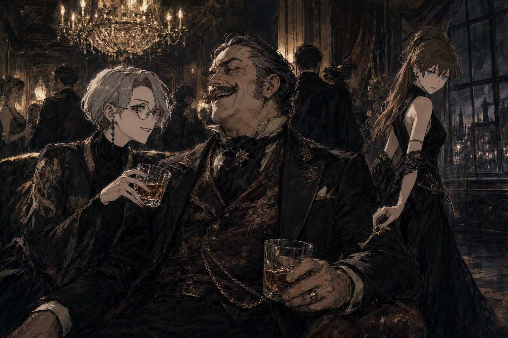
파티는 스트라스밀 고아원을 위한 자선 모금 행사라는 이름을 걸고 있었다. 레비아탄을 사냥하는 세 선단의 수장, 스트랭포드 공과 클레이브 대부인과 안카야트 대부인이 한자리에 모이는 일은 흔치 않았다. 스트랭포드 공은 와인이 형편없다며 대놓고 투덜거렸고, 클레이브 대부인은 그런 그를 머저리라 쏘아붙였다. 안카야트 대부인은 웃는 얼굴로 둘 사이를 갈랐다. 고아원장 마가렛은 그 사이를 오가며 연신 고개를 숙였다. 자리에서 일어난 스트랭포드 공이 잔을 들어 축사를 시작했다. “원활한 고아 사냥과 레비아탄의 행복을 위하여!” 장내가 순간 얼어붙자 그는 웃으며 말을 뒤집었다. “크하하, 반대로군. 원활한 레비아탄 사냥과 고아들의 행복을 위하여!” 웃음으로 덮었지만, 그 말실수가 무엇을 가리키고 있었는지는 이 자리에 있던 누구도 되묻지 않았다.
일주일 전, 세이렌 상사의 사무실에는 여느 때처럼 부두의 아이 베텔이 들어와 놀고 있었다. 그러다 문이 열리고 후드를 눌러쓴 사내가 들어섰다. 후드를 벗은 얼굴은 낯이 익었다 - 유령사 레버넌트, 본명 키에란이었다. 그는 부두의 주민들이 자꾸만 사라진다고 했다. 선원이나 일꾼이 실종되는 것쯤이야 도스크볼에서는 드문 일도 아니었지만, 이번에는 아이들까지 자취를 감추고 있었다. 활동자금은 부족하지 않게 쳐주겠다는 말과 함께 그는 협조를 구했다. 이야기가 오가는 중에 슈팅스타는 그의 등 뒤로 돌아가 슬쩍 주머니에 손을 넣었다. 하필 그 손끝이 눈에 띄었다. 자리는 순식간에 얼어붙었지만, 세이지가 매끄러운 말솜씨로 분위기를 되돌려놓았고, 레버넌트는 못 본 척 넘어가 주는 쪽을 택했다.
자선 파티장은 그 실마리를 좇아 잠입한 곳이었다. 스트랭포드 공이 차 안에 금고를 두고 그 안에 보고서를 넣어둔다는 것, 그리고 그 금고 열쇠가 그의 몸에서 좀처럼 떨어지지 않는다는 것까지는 알아낸 뒤였다. 세이지는 형편없는 와인 대신 챙겨온 위스키를 슬쩍 밀어 넣으며 스트랭포드 공의 옆자리를 차지했다. 다져진 아부와 정치인다운 악수가 이어졌고, 잔이 비워지는 속도만큼 경계도 함께 풀려 나갔다. 슈팅스타는 그 틈을 놓치지 않고 열쇠를 빼내 창가로 향했다.
창밖, 벽에 등을 기댄 채 기다리던 잿빛새와 송장벌레에게 열쇠가 건네졌다. 두 사람은 어둠 속에서 스트랭포드 공의 차로 다가가 금고를 열고 안에 든 보고서를 챙겼다. 일을 끝내고 돌아서던 순간, 근처에서 서성이던 거지 소년과 눈이 마주쳤다. 소년은 방금 벌어진 일을 처음부터 지켜본 눈치였다. 송장벌레는 망설임 없이 죽여버리겠다고 얼렀고, 잿빛새는 그 혀부터 잘라내는 게 낫지 않겠냐고 나직이 거들었다. 소년은 그 자리에 얼어붙은 채 아무 말도 하지 못했다.
빼낸 보고서에는 예상보다 무거운 내용이 담겨 있었다. 레비아탄의 포획량이 눈에 띄게 줄어들고 있으며, 이대로면 한 달 안에 사냥이 완전히 멈춘다는 것. 그리고 그것을 막으려면 지금보다 열 배 많은 ‘인원’을 ‘투입’해야 한다는 것. 자선이라는 이름을 걸고 열린 이 파티가 실은 고아를 사고파는 자리라는 사실과, 스트랭포드 공이 잔을 들며 뱉었던 말실수가 그제야 하나로 겹쳐졌다.
일을 마치고 돌아가는 길, 세이렌 상사의 손에는 보고서 말고도 다른 것이 들려 있었다. 죽이겠다 을러대던 거지 소년은 끝내 처리되지 않았다. 대신 그날 베텔과 함께, 소년도 세이렌 상사의 문턱을 넘었다. 인력 소개소를 간판으로 내걸었을 뿐 실은 뒷골목을 지키겠다고 나선 자경단이었으나, 그 하루의 끝에는 협잡과 감시와 협박 사이로 갈 곳 없는 아이 둘을 거둬들이는 일이 남아 있었다. 다음 날에는 스트라스밀 고아원으로 향하는 일정이 이미 잡혀 있었다.
2화 “아마 저희의 존재를 눈치챈거 같아요”
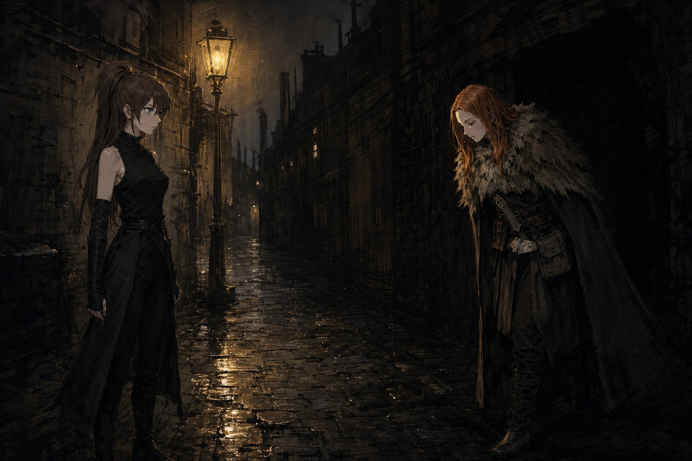
지난 건수의 뒤끝은 깨끗하지 않았다. 완벽하게 숨어들 생각이었던 침투는 절반만 성공했고, 그 사실을 레비아탄 사냥꾼들이 놓치지 않았다. 사냥꾼들은 곧장 전쟁을 선포했다. 세이렌 상사에게 남은 것은 명성 몇 점과 약간의 금전, 그리고 이번 순번에는 자유롭게 움직일 시간을 단 한 번밖에 낼 수 없다는 제약이었다.
먼저 손을 댄 것은 부두에서 붙잡아둔 거지 꼬마였다. 뭔가 알고 있을 거라는 기대와 달리, 캐물을수록 드러난 것은 그 아이가 정말로 아무것도 아닌 그냥 거지라는 사실뿐이었다. 실마리 대신 남은 건 헛수고에 대한 자각이었다.
남은 하루는 둘로 나눠 썼다. 송장벌레는 하녀로, 세이지는 그 집 도련님으로 꾸미고 스트라스밀 고아원 문턱을 넘었다. 귀가 어두운 한 노인 앞에서 너스레를 떨며 시간을 벌던 두 사람은, 그렇게 주워 담은 말들 사이에서 실마리를 골라냈다. 후원자들이 고아를 데려가는 ‘스카웃’ 행사가 궂은비 탓에 일주일 밀렸다는 것, 그리고 소매치기 왈다와 빠른손이 무언가 큰일을 벌이려 벼르고 있다는 것이었다. 세이지가 다정한 말로 왈다를 어르는 동안, 송장벌레는 그 옆에서 눈을 부라리며 힘을 보탰다. 당근과 채찍이 이렇게나 안 어울리는 얼굴로 나뉘어 있다는 걸 왈다가 눈치채지 못했을 리 없었지만, 그래도 두 사람은 필요한 말을 다 들을 수 있었다.
반대편으로 향한 잿빛새와 슈팅스타의 하루는 그만큼 매끄럽지 않았다. 안카야트 선단의 선의 에드먼드를 만나려 했지만, 정작 그와는 말 한마디 나누지 못한 채 발길을 돌려야 했다. 얻은 것 없이 하루가 저물었다는 사실이 두 사람의 발걸음을 무겁게 했다.
자유 시간이 끝나갈 무렵 작은 건수 하나가 떨어졌다. 안개사냥개단을 상대하는 일이었다. 손에 익지 않은 힘 조절은 결국 도를 넘었다. 이렇다 할 명분도 없이 조직원 셋의 목숨이 그 자리에서 끊어졌다. 그중 하나, 리차드라는 사내는 한 번 숨이 끊긴 뒤 다시 눈을 떠야 했다. 혼란한 싸움터 한복판에서, 누군가는 오래도록 벼르던 유령 하나를 마침내 손에 넣었다.
막간의 움직임을 마치고 돌아오는 길, 등 뒤를 밟는 기척을 가장 먼저 알아챈 것은 세이렌 상사 쪽이었다. 걸음을 멈추자 그림자 속에서 낯선 얼굴 하나가 걸어 나왔다. “안녕하세요. 저는 케이트 콕스, 푸른코트의 조사원입니다.” 목례와 함께 던진 이름이었다. 케이트는 에두르지 않았다. 어제 저녁 연회에서 자리를 슬쩍하는 대신 부축해서 복도로 데리고 나가던 그 수법이 오히려 눈에 띄었다고, 그 자리에 있던 이들 중 스트랭포드 공을 좋아하는 사람은 단 한 명도 없었으니 그만한 것은 다들 눈감아준 셈이라고, 세이렌 상사는 이미 사교계의 스타나 다름없다고 그녀는 짚어냈다. 그리고 용건을 밝혔다. 의뢰가 아니라 부탁이라고 그녀는 못 박았다. 스트라스밀 고아원에서 곧 터질 폭동을 막아달라는 것, 적어도 아이들이 죽는 꼴만은 보고 싶지 않다는 것이었다.
세이렌 상사는 그제야 깨달았다. 감쪽같이 숨겼다고 믿었던 하루하루가 실은 누군가의 눈앞에서 벌어진 일이었다는 것을. 케이트가 등을 돌려 사라진 자리에는, 대체 얼마나 많은 눈이 자신들을 지켜보고 있었는지 모른다는 께름칙함만 남았다.
3화 “뒤가 구린 사람이 왜 이렇게 많아”
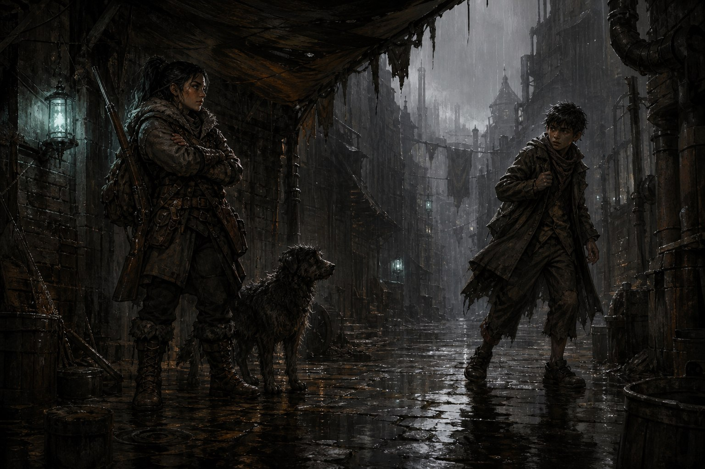
도스크볼에는 그 며칠 내내 비가 내렸다. 스트라스밀 고아원의 스카웃 일정은 그 비 때문에 다시 한번 밀려났고, 세이렌 상사에게는 오히려 숨 돌릴 틈이 되었다. 케이트 콕스가 남기고 간 부탁과 왈다가 던진 부탁은 서로 정반대였다. 폭동을 막아 아이들을 살릴 것인가, 폭동을 도와 아이들을 빼낼 것인가. 어느 쪽도 자경단으로서 못할 일은 아니었기에, 답은 쉽사리 나오지 않았다.
이미 알아낸 사실들이 있었다. 하녀와 도련님 행세로 고아원 안쪽을 살피고 온 세이지와 송장벌레 덕분에, 원장 마가렛이 고아들에게 빚을 지워 그 빚을 갚는 대가로 범죄조직이나 뱃일에 떠넘기고 있다는 것, 이번에는 레비아탄 선단이 우선 공급 계약을 내세워 그 절반가량을 강제로 데려가려 한다는 것까지는 파악이 끝나 있었다. 문제는 그 다음이었다. 당장 손에 쥔 정보들을 어느 쪽으로 이어붙여야 할지, 그리고 그 판단에 따라 누구의 편에 설지는 여전히 안개 속이었다.
결국 움직인 것은 송장벌레였다. 군인 집안에서 자란 특유의 무게감으로 상황을 재던 그는, 힘으로 누르는 대신 왈다를 직접 찾아가 담판을 지었다. 총이 아니라 말로 매듭지은 협상이었다. 왈다는 못 이기는 척 물러섰고, 계획된 폭동은 일주일 뒤로 미뤄지기로 했다. 당장 눈앞에 닥친 불을 끄지는 못했어도, 세이렌 상사에게는 그것으로 숨 돌릴 여유가 하루하루 늘어난 셈이었다.
하지만 비가 그친다고 해서 구름까지 걷히는 것은 아니었다. 사냥철은 다가오고 있었고, 레비아탄의 피는 이유 없이 줄어들고 있었고, 그 갈증을 채우기 위해 누군가는 계속해서 아이들을 세고 있었다. 왈다와의 약속이 정말로 지켜질지, 마가렛이 감추고 있는 것이 이게 전부인지, 케이트가 넘겨주지 않은 패는 또 무엇인지, 아무것도 확실하지 않았다. 뒤가 구린 사람은 이번에도, 셀 수 없을 만큼 많았다.
4화 “통속 소설에도 이런 저세상 전개는 없거든요”
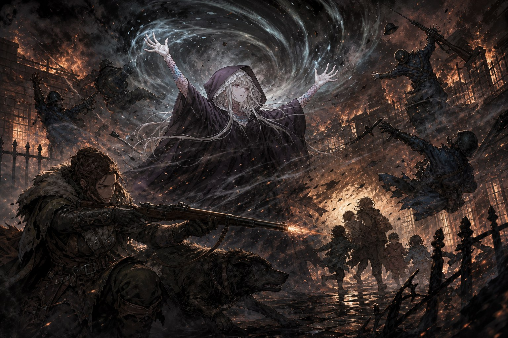
한 주 건수를 쉬어간 세이렌 상사에게 떨어진 것은 휴식이 아니라 도시 하나를 통째로 태울 불씨였다. 스트라스밀 고아원에서 왈다가 인질을 잡은 채 고립되어 있다는 전갈이 날아든 것은 예정보다 하루 이른 밤이었다. 급히 달려온 빠른손의 다급한 목소리, 그리고 현장에 이미 홀로 도착해 있던 스트랭포드 공. 이상한 점은 그의 마차뿐, 늘 타고 다니던 차는 어디에도 보이지 않았다.
가짜였다. 왈다가 쥐고 있던 스트랭포드 공도, 곁의 마가렛도, 얼굴을 투구로 가린 경호대원도 모두 이미 인질로 붙잡혀 있었고, 정작 진짜는 따로 있었다. 그 경호대원은 외상 하나 없이 소름 끼치도록 창백한 얼굴을 하고 극도로 긴장한 채 서 있었다. 바깥에서는 다모트가 이끄는 푸른코트의 특수부대가 돌입을 준비하고 있었다. 인질의 목숨 따위는 셈에 넣지 않는 작전이었고, 고아들마저 인질로 삼자는 말이 태연히 오갔다. 고아원 곳곳에서는 이미 불이 옮겨붙어 어린아이들이 빠져나갈 길을 잃고 있었다.
돌입 직전, 공기 중에 옅은 갈색 연기가 일렁이더니 후드 코트를 걸친 소녀 하나가 헐떡이며 나타났다. 짧은 머리에 앳된 얼굴, 자신을 단검이라 밝힌 그는 쫓고 있는 조직이 있다고 했다. 오늘 이 자리에 함정이 있으니 잘 모른다면 다가가지 말라 경고하고는, 자세한 이야기는 ‘배부른 거위’ 여관에서 하자는 말과 함께 눈웃음을 남기고 사라졌다.
케이트가 다모트에게 총구를 들이댔지만 되레 제압당하며 협상은 끝장났다. 직접 돌입이 시작되자 세이지가 나섰다. 스트랭포드 공의 어린 동성 애인으로 완벽하게 위장해 들어가, 허벅지를 더듬어 눈앞의 스트랭포드가 가짜임을 확신했고, 다모트를 향해서는 총이 아니라 현혹을 겨눴다. 잿빛새가 불러낸 폭풍이 푸른코트의 진형을 흩뜨리는 사이 송장벌레는 여섯을 한꺼번에 제압사격으로 몰아붙였다.
경호대원이 마침내 투구를 벗었다. 창백한 얼굴, 긴 귀, 노란 눈. 정체는 로릭이었다. 변신하는 틈을 노린 푸른코트 저격수의 총알이 스쳤지만 대세를 바꾸진 못했고, 로릭은 한 팔로 마가렛을 낚아채 그대로 뛰어 사라졌다. 단검과 레버넌트가 그 뒤를 쫓으며 나머지에게 뒷일을 맡겼다. 아이들이 뒷문으로 빠져나가던 순간 부비트랩이 하나를 집어삼켰고, 세이지는 죽어가는 그 아이를 살리기 위해 몸을 던졌다. 자신마저 잃을 뻔한 갈림길에서 간신히 버텨낸 끝에, 아이는 목숨을 건졌다.
정작 가장 위태로웠던 것은 왈다였다. 정신이 이승을 떠나려는 순간, 슈팅스타가 입을 맞췄다. 그것으로 왈다의 정신은 순식간에 되돌아왔다. 오래도록 곁을 맴돌던 마음이 죽음의 문턱 앞에서야 비로소 제 모습을 드러낸 셈이었다.
밤이 걷힐 무렵 자경단원 중 누구도 목숨을 잃지 않았다. 다만 귀가 어두웠던 고아원의 노인 하나가 그 밤을 넘기지 못했다. 로릭과 마가렛은 끝내 놓쳤고, 가짜 스트랭포드 공을 세운 자가 누구인지, 이 도시에 그칠 줄 모르고 내리는 비가 무엇을 예고하는지, 그 뒤에 숨은 조직의 정체가 무엇인지는 여전히 어둠 속이었다. 확실한 것은 하나, 이 사건이 히탐이라는 이름과 맞닿아 있다는 것뿐이었다.
5화 “대학엔 미친 사람들 밖에 안 다니는구나”
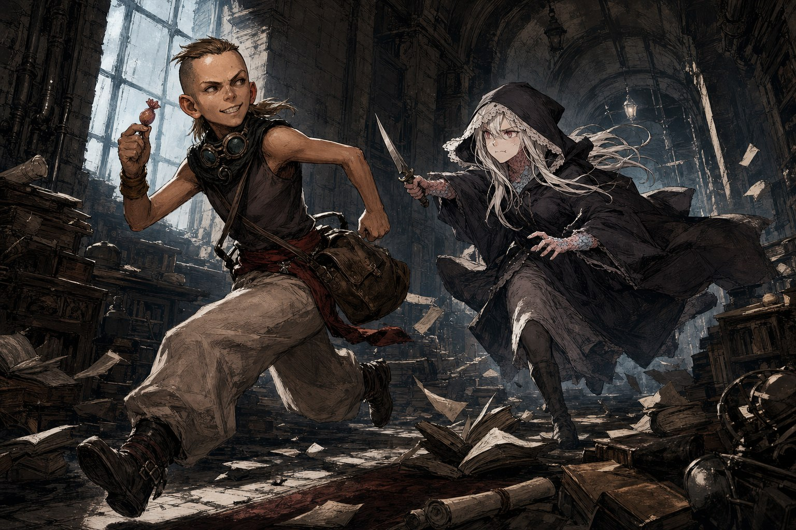
폭동의 재는 쉽게 가라앉지 않았다. 지난 건수에서 사로잡아 온 가짜 스트랭포드 공, 본명 하워드는 여전히 세이렌 상사의 손아귀에 있었다. 정보를 캐낸 뒤 놓아줄 생각으로 시작한 취조는 어느새 도를 넘었다. 자경단이라는 이름값은 잊힌 지 오래였고, 더 그럴싸한 협박 대사를 궁리하는 스스로를 발견할 즈음엔 이미 하워드의 눈에 그들은 완전한 악당으로 비치고 있었다. 결국 하워드는 틈을 노려 달아났다. 다행히 멀리 가지는 못했다. 송장벌레가 사냥개처럼 그 뒤를 쫓아 짧은 몸싸움 끝에 다시 붙잡아 왔다. 돈이 최고라고 믿는 슈팅스타에게도, 자경단이란 무엇이어야 하는가는 여전히 풀리지 않은 질문으로 남았다.
잿빛새는 그치지 않는 비의 이유를 캐겠다며 차터홀 대학으로 향했다. 레비아탄학을 가르친다는 교수를 찾아갔지만, 그 자리에 있던 것은 교수 행세를 하는 부랑자였다. 우당탕탕 이어진 소동 끝에 잿빛새는 하마터면 그 자리에서 대학원생으로 등록될 뻔했다. 그 와중에도 건져낸 것은 적지 않았다. 죽음과 유령의 의식이라는 낡은 마도 이론, 유령면역자를 찾아 헤매는 안카야트 선단의 움직임, 인간은 공격하지 않되 유령면역자만은 공격한다는 레비아탄의 기묘한 성질, 그리고 레비아탄의 피가 끊기면 도스크볼이 영원한 어둠 속으로 가라앉는다는 사실까지. 소란을 곁에서 지켜보던 빠른손은 제 실력을 뽐내겠다며 잿빛새의 주머니에서 사탕을 슬쩍했다가, 칼을 뽑아든 잿빛새에게 그대로 쫓기는 신세가 되었다.
그 사이 스트라스밀 고아원은 완전히 폐허가 되어 있었다. 빠른손은 그저 길목 하나만 조용히 날려버릴 생각이었지만, 누군가 불러낸 거센 바람이 불길을 걷잡을 수 없이 키워버린 탓이었다. 그 폭탄을 어디서 구했는지 캐물으면 돌아오는 대답은 역시 히탐이었다. 도스크볼의 뒷골목에서는 그라인더파와 붉은띠단 사이에 전쟁이 선포되었고, 자경단은 그 소용돌이 한복판에 발을 걸치고 있었다.
조각들을 이어붙일수록 눈길은 한 아이에게 향했다. 베텔. 유령이 나온 자리에서 으스스해하는 시늉을 한 적은 있어도, 정말로 유령을 보고 느꼈다는 걸 입증할 만한 반응은 누구도 본 적이 없었다. 만약 저 아이가 십 년에 한 명 나온다는 그 체질이라면, 헌터즈가 먼저 냄새를 맡는 순간 조용히 사라지게 될 터였다. 그날 밤 늦게, 세이렌 상사의 문을 두드린 것은 리토였다. 무표정한 얼굴로 넷을 하나하나 훑어보는 그의 곁에는 선의 에드먼드와, 낯설지만 어딘가 다정한 유령사 메아리가 함께였다. 용건은 짧았다. 안카야트 대부인이 부른다는 것. 장소는 크로우스풋의 ‘배부른 거위’ 여관이었다.
6화 “인류를 구한다는 말이 신경쓰이네요”
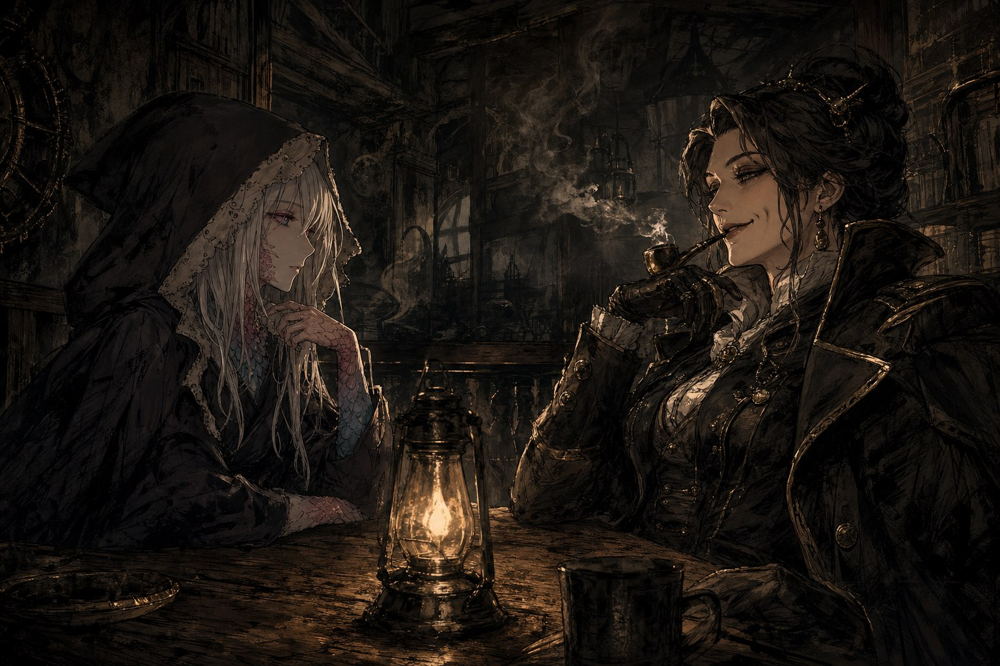
안카야트 대부인의 부름을 따라, 세이렌 상사는 크로우스풋의 배부른 거위 여관으로 향했다. 문을 밀고 들어서자 리그니가 대뜸 투덜거렸다. “아니 좀 쉬려고 했더니 왜 또 손님이야.” 안쪽 자리에 앉은 안카야트 대부인은 파이프에 불을 붙이며 셋을 가늠하듯 바라보았다. 유령면역자에 대해 얼마나 알고 있느냐는 물음에 셋이 내놓은 대답은 그녀를 만족시키지 못했다. “당신들이 알고 있을 정도면 당연히 나도 알고 있을 거라는 생각 정도는 해줬으면 좋겠군.” 그러나 뜻을 굽히지 않고 되받아치려는 태도만큼은 마음에 든 모양이었다. 보조개를 드러내며 환하게 웃은 그녀는 이내 본론을 꺼냈다. 오늘은 유령사를 채용하는 면접 자리라고. 정의와 이익, 윤리와 금전처럼 저울의 양쪽이 팽팽하게 맞서는 게 인생의 흔한 딜레마라면, 이번엔 저울추를 몽땅 한쪽에만 얹어 주겠다고 그녀는 말했다. 유령면역자를 찾는 일을 도와주면 돈과 명예를 얻을 것이고, 덤으로 클레이브 대부인의 발을 묶어주면 인류를 구하는 셈이 될 거라고. 그 마지막 말에, 누군가 나직이 중얼거렸다. 인류를 구한다는 말이, 어쩐지 신경 쓰인다고.
의뢰의 무게를 다 삭이기도 전에 밤이 대답을 대신했다. 세이렌 상사 북쪽 건물에서 총성이 터지고 비명이 뒤따랐다. 셋이 달려간 자리에는 온몸이 피투성이가 된 베텔이 총을 손에 쥔 채 떨고 있었다. 열한 살, 유령의 파장을 조금도 받아들이지 않는 그 아이는 일행을 보자마자 총을 바닥에 떨구고 울 듯한 눈으로 쳐다보다가 그대로 어둠 속으로 달아났다.
이층에는 시신이 둘이었다. 잘 차려입은 중년 사내는 눈에 정확히 한 발을 맞고 그 자리에서 절명해 있었다. 품에서 나온 뱃지가 그가 부두 지역을 맡은 푸른코트 지부장 마커스 터너임을 알렸다. 그 옆에는 싸구려 튜닉을 걸친 사내가 복부와 심장에 칼을 맞고 쓰러져 있었는데, 몸 어디에도 막아낸 흔적이 없었다. 넘어진 잉크병과 바닥에 떨어진 싸구려 만년필이, 무언가에 서명하려던 순간 이 자리가 순식간에 아수라장으로 변했음을 말해주고 있었다.
일층에서는 클레이브 대부인이 기다리고 있었다. 얼굴은 새까맣게 변해 있었고 복부에는 총상이 있었다. 오른쪽 손목 바깥으로는 검푸르게 부어오른 상처가 진물을 흘리고 있었다. 다가선 손을 그녀가 별안간 덥석 붙잡았다. 인류와 생명을 위해서였다고, 그리고 히탐이라는 이름을 게워내듯 웅얼거리고는 그대로 숨이 끊겼다. 어디선가 죽음감시까마귀 우는 소리가 한 마리, 두 마리, 이어 붙기 시작했다. 감령관의 종이 울리기까지 그리 오랜 시간이 남지 않은 셈이었다.
증거를 정리할 틈도 없이 케이트가 문을 열고 들어섰다. 레이피어를 찬 푸른코트의 신입 조사원이었다. 잿빛새는 곧바로 칼을 내려놓고 두 손을 들어 보였지만, 그 협조는 반쪽짜리로 끝났다. 송장벌레가 이러다 우리가 범인으로 몰리기 딱 좋겠다고 중얼거린 바로 그 순간, 슈팅스타가 케이트를 향해 몸을 던졌다. 짧고 사나운 충돌이었다. 검을 맞대기가 무섭게 슈팅스타는 그대로 무너져 내렸다. 다치는 것 이상의, 정신이 아득해지는 충격이었다. 이번 조직이 겪은 첫 트라우마였다.
동료 하나를 잃다시피 한 채로도 조사는 멈추지 않았다. 케이트는 사정을 봐주지 않았지만 적어도 거짓말은 하지 않겠다고 했다. 감령관의 종이 다가올수록 압박은 짙어졌고, 시신과 흩어진 단서 위로 시간을 거슬러 사건의 밑그림을 그려나가야 했다. 누가 먼저 총을 뽑았는지, 누가 마지막에 이 자리를 떠났는지, 그리고 히탐이라는 이름이 어디로 이어지는지. 그 답을 다 찾기도 전에, 그 밤은 그렇게 저물어 갔다.
7화 “건드리지 말아야 할 것을 건드린 느낌이군”
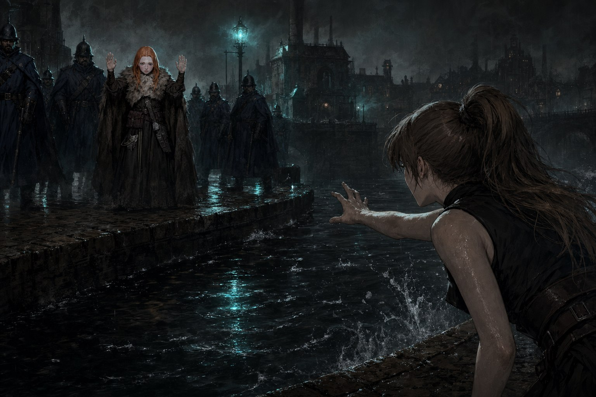
부두 소녀 베텔은 유령의 파장에 조금도 반응하지 않았다. 자경단은 그 사실을 한 번으로 믿지 않고 몇 차례나 되짚어 확인했다. 십 년에 한 번 나올까 말까 한 유령면역자, 그 몸 하나를 두고 레비아탄 사냥꾼들이 이미 유령사들을 풀어 뒤지고 있다는 소문이었다. 확인이 끝나자 잿빛새는 담담하게 스스로 미끼가 되겠다고 말했다. 슈팅스타가 놀라 말렸지만, 잿빛새는 물러서지 않았다. 유령사에게 죽음이란 다른 이들이 두려워하는 것과는 다른 무게를 지닌다는 것을, 그 말투에 실어 전했다.
베텔을 숨겨둘 곳을 정한 뒤, 자경단은 예전에 안개사냥개파에게서 빼앗아 자신들의 영토로 삼은 낡은 아지트로 향했다. 부두를 바라보며 여전히 그 자리를 지키고 있는 바퀴벌레의 뒷모습이 눈에 들어왔다. 아지트에 다다르기도 전에, 뒤를 밟아온 푸른코트 둘과 그곳을 임시 거처로 삼고 있던 떠돌이 괴한 둘이 서로 마주쳤다. 자경단은 그 둘을 부딪치게 만들어 놓고 조용히 발을 뺐다.
숨을 돌린 자리에서 잿빛새는 유령장에 남은 메아리를 되짚어 클레이브 대부인 사건의 현장을 다시 걸었다. 송장벌레가 떨어진 만년필을, 잿빛새가 엎어진 계약서를 붙들고 놓지 않은 끝에, 그 방에 있어서는 안 될 세 사람의 그림이 맞춰졌다. 부두의 이권을 노리던 붉은띠단의 말단 29, 무언가를 캐내려던 푸른코트 부두지구 부서장 마커스 터너, 그리고 그 자리에서 서명을 남긴 클레이브 대부인. 셋 중 누구도 그 방에서 살아나가지 못했다.
실마리를 쥐고 자경단은 붉은띠단의 검술학교로 마일레라 클레브를 찾아갔다. 세이지가 특유의 언변으로 마일레라의 경계를 풀어놓았고, 그 자리에서 마일레라는 클레이브의 뒤를 이을 사람이 먼 친척인 로슬린 켈리스라는 것과, 그 이름 뒤에 히탐이라는 조직이 도사리고 있다는 것을 흘렸다. 스컬록 공의 그림자도 그 자리에서 함께 언급됐다. 붉은띠단 단원 제이크에게서는 뜻밖의 사실도 얻어냈다. 훈련받은 푸른코트는 검을 무장하지 않는다는 것. 그 한마디가, 현장에 남았다는 검흔의 정체를 다시 의심하게 만들었다.
그날 왈다를 통해 전해진 편지 한 통이 모든 것을 뒤집었다. 그동안 자경단 곁에서 조용히 정보를 캐던 조사원 케이트가, 실은 붉은띠단의 부관 체일 본인이었다는 사실이었다. 그동안 보여준 얼굴과 숨겨온 정체 사이에서 자경단은 한동안 말을 잃었다. 베텔에게 쏠린 수사망을 그대로 두면 또 다른 소중한 사람이 위험해질 판이었다. 둘 중 하나를 골라야 한다는 무거움 앞에서, 잿빛새가 먼저 입을 열었다. 둘 다 구하면 된다고.
세이렌 상사로 돌아가는 길, 강 하나를 사이에 두고 케이트와 마주쳤다. 이미 몸을 낮춘 채 골목에서 튀어나온 푸른코트들에게 둘러싸여 있었다. 케이트는 두 손을 든 채 담담히 작별을 고했다. 자경단이 자경단답지 않게 열심히 해주어 즐거웠다고, 클레이브 대부인을 쏜 것은 자신이었다고, 도스크볼을 구하고 싶었다는 말만은 진심이었다고. 자수서는 이미 푸른코트 자리에 남겨두고 나온 뒤였다. 마지막으로 왈다를 찾아가 보라는 말과 함께, 히탐에 관한 충격적인 정보가 담긴 봉인된 편지 한 통을 건넸다. 다모트가 그녀를 엎드리게 하고 무릎으로 등을 눌러 수갑을 채우려는 순간, 낯선 청년 하나가 골목 저편에서 달려오며 “체일!” 하고 외쳤다. 덤벼드는 푸른코트의 총을 베어내고 발로 차 강에 처넣은 그가 불곰이었다. 억지로 고개를 돌린 케이트는 그만두라고, 자신이 잡히지 않으면 다른 사람이 대신 잡혀간다고 소리쳤지만, 돌아온 대답은 짧았다. 모른다고. 케이트는 웃으며 몸을 회전시켜 다모트를 강에 처박고는 스스로 강물로 뛰어들었다. 푸른코트들의 총구가 불을 뿜는 사이, 잿빛새가 유령의 힘으로 허공에 뜬 그녀를 당겨왔고, 다급해진 슈팅스타는 생각할 겨를도 없이 강물에 뛰어들었다. 정작 그녀를 물 밖으로 끌어낸 것은 송장벌레의 사냥개 체체였다. 다모트가 사격 중지를 외칠 때까지, 불곰은 한 명을 더 베어 넘긴 뒤에야 그 자리를 벗어났다.
물에 젖은 채 다시 만난 두 사람 앞에서 자경단은 봉인된 편지를 거칠게 뜯었다. 케이트는, 이제는 체일로 돌아가 붉은띠단에 몸을 담기로 했다. 어느 쪽이든 그녀는 이미 푸른코트를 떠난 뒤였다. 레비아탄 선단에 가족을 빼앗긴 송장벌레와, 오래전 스컬록 공의 손에 일족을 잃은 잿빛새, 그리고 로슬린 켈리스와 묵은 악연을 지닌 슈팅스타까지. 흩어져 있던 실이 이 밤 하나로 얽혀 들었다. 도스크볼의 어둠은 걷히지 않았지만, 자경단은 이제 그 어둠 속에서 무엇을 쫓아야 하는지 알고 있었다.
8화 “그저 사람들을 죽게 만들고 싶은거야?”
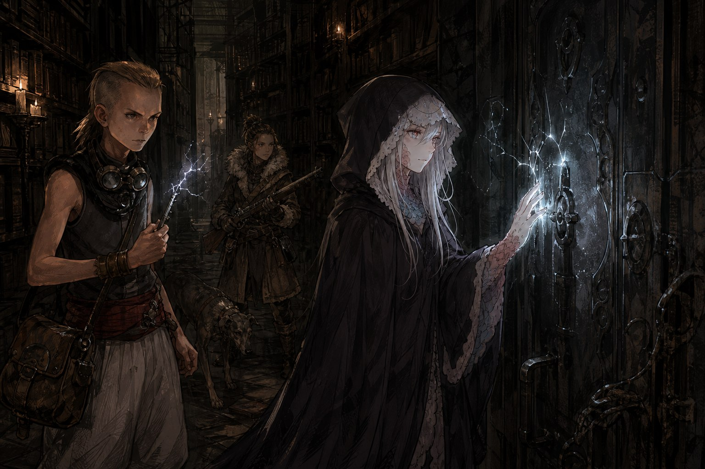
클레이브 대부인의 장례식이 치러지던 날, 도스크볼의 푸른코트는 거리마다 넘쳐났다. 대부인 급의 장례에는 도시 전체의 경비가 동원되는 법이었고, 그 틈에 정작 건물들은 무방비해졌다. 그 빈틈을 알려준 것은 크로우스풋의 그림자들, 망나니즈였다. 겨우살이, 단검, 불곰, 네눈박이, 유령사 레버넌트까지 한자리에 모인 그 만남은 재회의 소란부터 시작됐다. 케이트를 향해 불곰이 다짜고짜 손을 올렸다가 되레 카운터에 나가떨어졌고, 케이트는 그런 그를 태연히 놀려댔다. 네눈박이는 연기를 뿜는 낯선 쇳덩어리를 앞세우고 나타났는데, 리그니의 영혼을 넣었다는 말은 그 자신의 입으로 금세 거짓임이 밝혀졌다. 추적을 피하려 빌린 이름일 뿐이었다. 겨우살이는 잠시 마차를 훔쳐 타고 거리를 한 바퀴 돌고 오는 소동까지 피웠다.
그 소란 사이로 케이트는 자신이 걸어온 길을 짧게 털어놓았다. 스코블란 난민 출신으로 히트맨이 되었던 시절, 붉은띠단의 뜻에 따라 푸른코트에 잠입해 들어갔던 일, 그리고 그 잠입 끝에 부두의 소년 진을 지키지 못하고 잃었던 밤. 그 밤 이후 그녀는 푸른코트를 안에서부터 바꿔보려 했지만 돌아온 것은 실적이 아니라 의회의 눈총이었다고 했다. 클레이브 대부인의 죽음에도 그녀가 얽혀 있었다. 독사 물약에 당해 되살릴 방법이 없던 대부인을, 자신의 총으로 편하게 보내주었다고 담담히 인정했다. 그리고 망나니즈는 본론을 꺼냈다. 차터홀 대학 도서관에 잠든 모리스 교수의 연구 자료를 빼내는 일이었다. 레비아탄 사냥꾼들이 숨기는 진실과 유령면역자에 관한 무언가가 그 안에 있었다. 헤어지기 전 네눈박이는 색이 바뀌는 램프 하나를 건넸다. 노란색은 연락, 빨간색은 비상이라 했다.
도서관은 스트랭포드와 클레이브가 공동 출자해 세운 경비업체, 이름조차 스트랭포드가 제 이름 대신 슬쩍 끼워넣은 ‘그레이트 클레이브 시큐리티’가 지키고 있었다. 하지만 그날만큼은 다들 장례 행렬 쪽으로 빠져나가 거리가 헐거웠다. 창문으로 숨어든 잿빛새, 송장벌레, 슈팅스타, 빠른손은 남은 경비 몇을 조용히 제압하며 안쪽으로 나아갔다. 바깥문은 손댈 필요도 없었지만, 열쇠 세 개 중 하나로만 열린다던 안쪽 문은 그 자체로 함정이었다. 빠른손이 무심코 만졌던 열쇠 하나에서 전류가 튀어 그를 나가떨어뜨렸던 적이 있었기에, 이번에는 잿빛새가 나서서 마도의 힘으로 걸린 술법을 풀어냈다.
내실 문턱을 넘어서자 마주친 것은 정갈한 매복이 아니라 흐트러진 두 사람이었다. 안카야트의 명으로 경비를 서던 저격수 리토와, 그 곁의 유령사 메아리는 자리를 지키기는커녕 서로에게 정신이 팔려 있었다. 놀란 송장벌레가 곧바로 폭탄을 꺼내 던졌다. 문을 부수기 위한 것이 아니라 순전히 상대를 짓누르기 위한 수였다. 째깍이는 그것이 소리를 내며 터지면 도서관 전체에 침입이 알려질 판이었다. 잿빛새와, 사태 수습이 더 급해진 메아리가 마도의 힘으로 폭탄을 함께 붙들었고, 그 사이 슈팅스타가 침묵의 물약으로 소리를 지웠다. 총구를 겨눈 송장벌레와 바지만 걸친 리토 사이에서 서부극 같은 대치가 이어지는 동안, 빠른손은 그 틈으로 슬쩍 안쪽까지 스며들었다. “어이. 송장벌레라고 했나? 아는 얼굴 같군. 계속할 셈인가? 휴전하지.” 리토가 두 손을 들며 말했다. 안카야트에게만은 이 밀회를 비밀로 해달라는 그와 메아리의 청을 들어주는 대신, 무뢰한들은 순순히 길을 얻어냈다.
안쪽 서고에서 찾아낸 것은 챕터마다 암호로 묶인 모리스 교수의 연구 노트였다. 해독은 더디게 진행됐지만, 그 사이 잿빛새는 방 안에 옅게 남은 유령의 메아리에 손을 얹었다. 파장은 어렵지 않게 이어졌고, 모두의 눈앞에 오래전 이 방에서 있었던 밤이 펼쳐졌다. 정확히 언제였는지는 알 수 없었다. 다만 로릭이 이미 뱀파이어가 되어 있었으니 2년 전보다 오래지는 않았고, 하워드가 아닌 그 전임자가 있었으니 1년보다 최근도 아닌 시점이었다.
부서진 문 너머로 보라색 일렉트로플라즘 빛을 내는 책이 있었다. 그 앞에서 마가렛이 분주히 암호를 풀고 있었고, 그녀의 목에는 낯익은 목걸이가 걸려 있었다. 조율의 목걸이, 언젠가 크로우스풋의 무뢰한들이 좇던 바로 그 물건이었다. 벽에 기대앉아 이마에서 피를 흘리는 사내는 스트랭포드 공의 얼굴을 하고 있었지만 스트랭포드도 하워드도 아니었다. “나는 스트랭포드가 아니야.” 그가 웅얼거렸다. 로슬린 켈리스가 턱짓하자 로릭이 그의 목을 움켜쥐어 들어올렸다. 구석에는 화려한 옷을 입은 시신 하나가 널브러져 있었다. 로슬린이 발끝으로 망토를 걷어내자 드러난 얼굴은 다름 아닌 스컬록 공이었다. “유령면역자라는 자들도 일렉트로플라즘 필드에 닿으면 이렇게 되는군.” 로슬린이 웃으며 시신을 툭툭 걷어찼다. “하지만 넌 유령면역자가 아니니 오히려 상관없겠지. 그러니까 말야, 넌 더이상 쓸모가 없다는 거네.” 목이 졸린 채 사내가 간신히 내뱉었다. “나를 죽이면, 스트랭포드 공이 가만두지 않을 거다.” 그때 다모트가 뛰어들며 외쳤다. “로슬린 경, 2분 후면 경비원들이 들이닥칩니다!” 로슬린은 웃음기를 거두지 않은 채 총을 장전해 사내의 머리에 가져다 댔다. 조개껍질도 과일 껍질도 먹고 나면 버리기 마련이라고, 그러니 너도 그렇게 되어야 한다고 그는 말했다. 총성이 울리고, 현실이 돌아왔다.
스트랭포드 공이 정말 이 일을 몰랐을지, 아니면 자신의 대역이 죽고 하워드로 갈아치워진 사실을 처음부터 알고 있었을지는 아무도 답할 수 없었다. 무뢰한들은 손에 넣은 자료를 챙겨 소란이 가라앉기 전에 도서관을 빠져나왔다. 클레이브 대부인의 장례 행렬이 아직 거리를 메우고 있었고, 그 틈을 타 빠져나온 것은 다행이었다. 하지만 숨 돌릴 틈도 없이, 네눈박이가 건넨 램프가 붉은빛으로 빠르게 깜빡이기 시작했다. 비상을 알리는 신호였다. 도서관 하나를 겨우 털어낸 참인데, 저 너머에서는 이미 더 큰 일이 벌어진 뒤였다.
8.5화 “그런 세계에 의미가 있나요?”
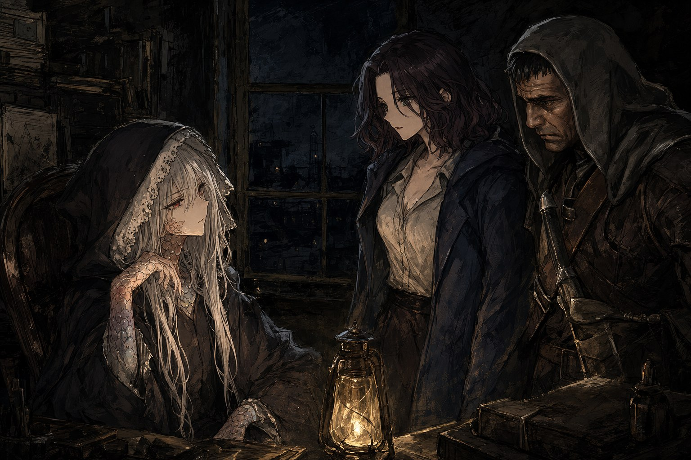
도서관의 밤으로부터 하루를 거슬러 올라간, 결행 전야의 이야기다. 세이렌 상사의 숙소에는 팽팽한 정적이 감돌았다. 다음 날 도서관을 치기로 한 이상 몸을 아껴야 했으므로 송장벌레는 일찌감치 잠자리에 들었고, 슈팅스타도 이불을 걷어차며 뒤척이다 잠에 빠져들었다. 잿빛새만이 사무실 한켠에서 낮은 목소리로 누군가와 이야기를 나누며 밤을 깨어 있었다. 그리고 그 밤, 각자의 문 앞에는 저마다 다른 손님이 찾아왔다.
바퀴벌레는 송장벌레를 서펀트 파크로 데리고 나가 바다가 보이는 자리에 세웠다. 겨우살이에게 들었다며, 송장벌레가 도스크볼에 흘러든 시기가 자신이 아는 어떤 이와 겹친다는 말로 운을 뗀 그는, 대뜸 아버지 아르부스 아란의 이름을 꺼냈다. 노예로 팔려 여러 손을 거친 끝에 클레이브 대부인의 선단에 팔려갔고, 레비아탄 사냥을 나간 뒤로 돌아오지 못했으리라는 것이 바퀴벌레가 캐낸 전부였다. 정보의 값으로 그는 무례한 질문들을 매달았다. 세이렌 상사의 동료들이 소중한가, 그들을 모두 죽여야 아버지를 찾을 수 있다면 그리하겠는가, 도스크볼 전체가 죽음의 땅이 된다는데도 아버지를 포기하지 않겠는가. 송장벌레는 신중에 신중을 더해, 누구도 희생시키지 않을 방법을 끝까지 찾아보겠다고 답했다. 바퀴벌레는 더 캐묻지 않았다. 그저 동료를 소중히 하라는 부탁 하나를 남기고 돌아섰다.
같은 시각, 낯선 얼굴들이 잿빛새를 찾아왔다. 단검이라 불리는 그레이스가 잿빛새를 오래전 이름, 펜데린 녹스로 불렀고, 곁에 있던 유령사 키에란은 안쪽에서 조용히 대화를 이었다. 유령면역자는 도스크볼에서 십 년에 한 명 태어나는 희귀한 체질이라 했다. 세상에 알려진 이는 일 년째 종적을 감춘 스컬록 공, 그리고 로릭이 죽은 뒤 까마귀파의 두목 자리에 올랐던 리사였다. 남은 것은 아직 얼굴을 드러내지 않은 십 대와 이십 대의 유령면역자였다. 단검은 자신에게 던져졌던 질문을 그대로 되돌렸다. 한 명을 죽여 세계를 구할 수 있다면, 반대로 세계를 멸망시켜 단 한 사람을 구할 수 있다면, 그리고 누군가 정말로 그런 선택을 한다면 이해해 줄 수 있겠느냐고. 잿빛새는 희생으로만 얻어지는 결과에는 의미가 없다고 잘라 답했다. 그것으로 충분한 대답이 되었다는 말을 남기고, 손님들은 왔던 것처럼 조용히 물러갔다.
한 시간 뒤 잠에서 깬 슈팅스타는 물 한 잔을 찾아 나섰다가, 창밖에서 자신을 부르는 텔다와 마주쳤다. 다리는 이제 겨우 부축을 받으면 걸을 만큼 나은 참이었다. 예전에 물었던 히탐에 관한 것을 직접 보여주겠다며, 텔다는 부두 동쪽의 버려진 건물로 슈팅스타를 이끌었다. 자물쇠 달린 문 옆 벽돌 몇 개를 순서대로 누르자 길이 열렸다. 동네 아이들이 어느 이루비아인 남녀를 몰래 지켜보다 알아낸 방법이라 했다. 안쪽에는 금속 덩어리와 원목 덩어리 같은 것들이 손댄 흔적 없이 의식을 기다리듯 놓여 있었다. 그 앞에서 텔다는 슈팅스타에게 물었다. 한 명을 죽여 세계를 구할 수 있다면 어떻게 하겠느냐고, 스스로가 죽어서 세계를 구할 수 있다면 그때는 또 어떻겠느냐고. 슈팅스타는 대답을 고르지 못한 채 물음 밖으로 빠져나갔다. 텔다는 더 다그치지 않았다. 언젠가는 선택이 필요한 때가 올 거라는 말과, 왈다와도 부디 잘 지내라는 씁쓸한 인사만을 남기고 돌아섰다.
날이 밝기까지는 아직 몇 시간이 남아 있었다. 셋 모두 같은 물음 앞에 나란히 세워졌으나 내놓은 답은 저마다 달랐다. 신중함으로 답을 미룬 이가 있었고, 희생 없는 결말만이 의미 있다고 잘라 말한 이가 있었고, 끝내 답을 피해 달아난 이가 있었다. 다음 날 도서관의 문이 열리기 전, 세이렌 상사는 그렇게 각자의 밤을 흘려보내고 있었다.
9화 “이쪽으로.. 오고있는 것 같아”
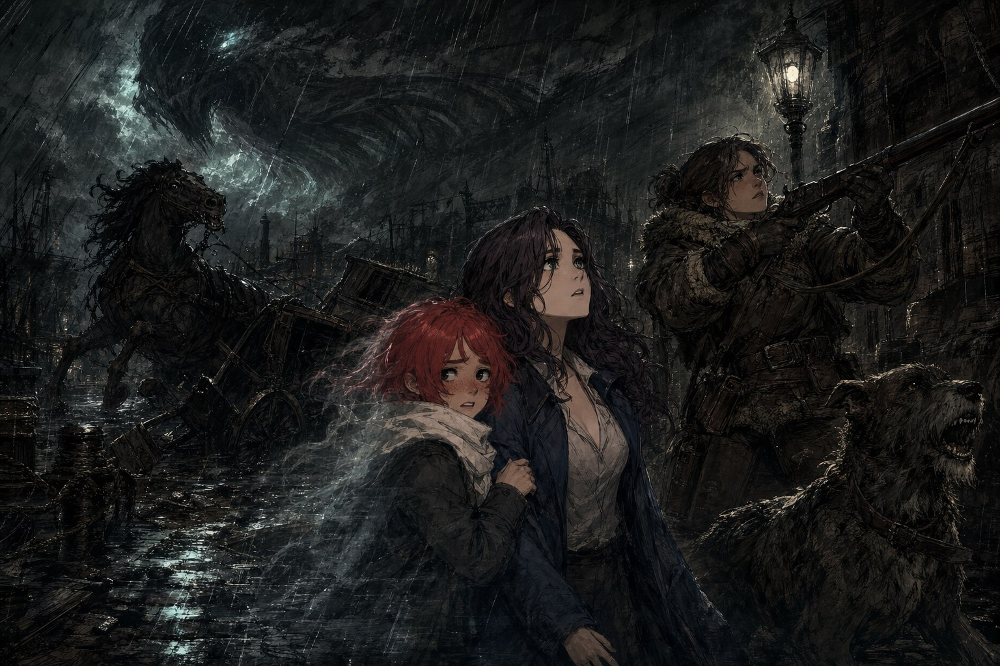
배부른 거위 여관의 문을 열었을 때, 세이렌 상사는 곧바로 안쪽이 정상이 아니라는 것을 알아챘다. 램프는 깜빡임조차 없이 꺼져 있었고, 로보-리그니 하나가 바닥에 나뒹굴고 있었다. 바 안쪽에는 누군가 피투성이가 된 채 쓰러져 있었다. 몇 시간 전까지만 해도 아무 일도 없었을 이 여관이, 지금은 완전히 엉망진창이었다.
네 시간 전으로 거슬러 올라간다. 무뢰한들은 오랜만에 돌아온 키에란과 마주 앉아 있었다. 가명을 쓸 때는 레버넌트라 불리는 그가 조심스러운 얼굴로 입을 열었다. “사과하오. 하지만 믿을 수 있는 사람들이 많지 않았소.” 이미 조직을 나온 몸으로 다시 부탁할 자격이 없다는 걸 알면서도, 그는 안카야트 대부인이 벌이고 있는 의식이 도스크볼 전체에 영향을 미치고 있다고 알렸다. 신호를 삼각측량해 짚어낸 지점은 헌터즈의 지하의식소였다. 등급5의 굉장한 자물쇠가 걸려 있었지만 억지로 딴 흔적은 없었고, 문을 열고 들어가 봐도 안에는 아무도 없었다. 의식의 준비만 덩그러니 남아 있었고, 최근 누군가 두어 명 다녀간 흔적만이 벽 여기저기에 어렴풋이 남아 있었다.
헌터즈의 덴을 덮쳤을 때 앞을 막아선 것은 선의 에드먼드였다. 총구를 제 머리에 겨눈 채 그는 소리쳤다. “너희들은 누구지? 안카야트에게 해를 끼친다면 가만히 있지 않겠어. 한 발짝만 다가오면 자살하겠다!” 문이 다시 열리고 안카야트 대부인이 직접 나와 그를 물렸다. “그만둬, 에드먼드. 도스크볼에서 그런건 통하지 않아.” 그녀는 침입자들을 태연히 안으로 들였다. 차를 한 모금 마시며 그녀는 자신이 리사가 아니라고, 한 사람을 위해 모두를 희생시키는 사람이 아니라고 말했다. 되받아친 말에는 “모두를 위해 한 사람을 희생시키는 사람이죠”라는 답이 돌아왔고, 안카야트는 부정하지 않았다. “하지만.. 물론 될 수 있으면 희생을 시키고 싶지 않아. 사람을 구하기 위해 사람을 죽여야 하는 모순에 처하고 싶지 않아.” 캐물음이 이어지자 그녀는 순순히 말을 풀어놓았다. 히탐이라는 이름이 고대 이루비아어로 검은 새, 까마귀를 뜻한다는 것. 리사가 까마귀파 밖에 따로 거느리고 있던 조직이 바로 히탐이었다는 것. 유령사 벨이 독자적으로 완성한 의식으로 로릭을 뱀파이어로 되살렸지만, 예상보다 많은 죽음을 필요로 한 탓에 그는 기억을 잃은 채 돌아왔다는 것. 유령면역자였던 리사가 죽었을 때는 아무것도 남지 않는 대신 유령장 전체에 파동을 일으키고 죽음감시까마귀들을 내쫓았다는 것. 그리고 레비아탄과 죽음감시까마귀가 어쩌면 닮은 존재일지도 모른다는 것.
배부른 거위 여관으로 돌아왔을 때 진실은 더 참혹했다. 리그니는 목과 배에서 피를 흘리고 있었고, 얼굴은 부어올랐으며 오른쪽 손가락 두 개가 잘려 있었다. 급히 영틀 수술을 시도했지만 소용없었다. 리그니는 그렇게 숨을 거두었다. 같은 시각, 세이렌 상사의 아지트에서는 단검이 벽을 주먹으로 내리치고 있었다. “이건… 너무하군요.” 그리고 낮게 덧붙였다. “....사지를 찢어버리겠어요.” 곁에서 지켜보던 키에란이 조심스레 말을 골랐다. “그레이스 아가씨, 단어가… 도스크볼의 무뢰한다워졌군요.” 단검은 잠시 말이 없다가 되받았다. “키에란. 내가 이 정도는 말해야 1년에 한 번 정도 웃는군요. 로릭을 위해 충성하던 때의 아저씨는 더 많이 웃었었는데요.” 키에란은 웃음기 남은 얼굴로 답했다. “저는 어딘가에 충성해야 살 수 있는 사람입니다, 아가씨.”
당장은 히탐의 꼬리를 잡을 방법이 없었다. 대신 레비아탄을 쫓다 보면 히탐이 자연스레 모습을 드러낼 것이라는 판단 아래, 조직은 다시 흩어져 실마리를 모았다. 케이트가 세이렌 상사로 억제기라 불리는 의문의 장치를 들고 왔다. 레비아탄 공학을 익혔고 자동차마저 직접 설계했다는 스트랭포드 공에 대한 소문도 들려왔다. 모리스 교수가 남긴 의식들도 하나씩 손에 들어왔다. 인간이 죽을 때 유령장에 울려 퍼지는 신호를 증폭하는 죽음과 유령의 의식, 그리고 유령면역자가 늘 내고 있는 미묘한 신호를 잡아 증폭하는 면역증폭의 의식. 어느 쪽이든 증폭 대상이 다르지 않다는 것을 알아챈 자는 조용히 입을 다물었다. 그사이 하늘에서는 비가 점점 짙어져, 나중에는 때리는 것처럼 느껴질 정도로 쏟아졌다. 원래는 맑아야 할 비가, 마치 잉크처럼 검게 내렸다.
그리고 그 밤, 거리 밖에서 불길한 비명이 터졌다. 도망치는 발소리와 천둥소리 사이로 마차 한 대가 뒤집혔고, 말은 공포에 질려 침을 흘리며 날뛰었다. 베텔이 그 소란을 따라 밖으로 나왔다. 유령병 하나가 깨지며 리처드가 튀어나왔고, 이상하게도 이번에는 일반인의 눈에도 그 모습이 비쳤다 - 베텔에게만은 여전히 보이지 않았지만. 베르틴은 정체 모를 괴생명체에게 쫓기고 있었다. 낯선 것들이 한꺼번에 거리로 쏟아져 나온 그 순간, 대부분이 몸이 굳어 움직이지 못하는 동안 송장벌레만은 침착했다. 죽음의 땅에서 살아 돌아온 사냥개답게, 그녀는 곁의 개 체체와 함께 총을 겨누고 괴생명체들을 하나씩 상대해 나갔다.
말이 무엇에 그토록 겁을 먹었는지 확인하려 고개를 든 순간, 모두는 그것을 보았다. 북서쪽 하늘, 먹구름이라 여겼던 것이 사실은 형태를 갖고 있었다. 고요히, 아주 조금씩 흔들리며 천천히 다가오고 있는 그것은 평생 본 것 중 가장 거대했다. 베텔의 몸이 갑자기 흐릿해지기 시작했다. 도서관에서의 회상 속에서 반투명하게 보였을 때와 똑같은 모습이었다. 붙임성 좋던 그 아이가 처음으로 누군가에게 매달려 울음을 터뜨렸다. “무서워요.. 도와주세요.. 잘 안 보여요.. 흐릿해요.” “어떻게 이런 일이 있을 수 있지? 유령면역자가 흐릿해진다고?” 누군가 던진 물음에, 단검이 레비아탄을 올려다보며 침을 삼켰다. 긴장한 목소리로 그녀는 말했다. “아닙니다. 유령면역자는 결코 유령장에 반응하지 않아요. 어쩌면… 이 세계 전체가 유령장을 향해 무너져 내리고 있는 것이겠죠.” 레비아탄은 조금씩, 그러나 분명하게 도스크볼을 향해 다가오고 있었다.
최종화 “이것은 당신의 싸움이자 우리의 싸움입니다.”
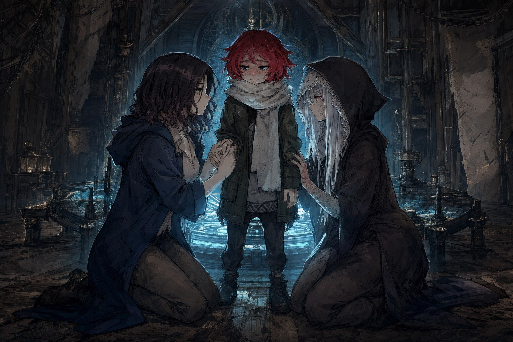
부두 일대는 이미 아수라장이었다. 인신공양도 소용없어진 지 오래인 레비아탄이 곧장 도스크볼로 올라오고 있었고, 골목마다 정체를 알 수 없는 것들이 기어 나와 사람을 헤집었다. 세이렌 상사는 일단 몸을 숨기고 장비를 추스렸다. 남은 패는 하나뿐이었다. 안카야트의 의식소에 있는 면역증폭의 의식과, 어딘가에 숨겨둔 억제기. 유령면역자를 죽이는 대신 그 신호를 증폭시켜 억제의 파장으로 되돌려보내는 길이었다. 전투력이 없는 이들을 고아원 대피소로 옮기는 일은 망나니즈가 맡았고, 억제기를 확보하는 일은 레버넌트에게 떨어졌다. 세이렌 상사의 몫은 의식소 그 자체를 되찾는 것이었다. “그럼, 살아서 뵙기를.” 갈림길에서 나눈 인사는 짧았고, 다시 건수가 시작되었다.
북쪽 부두로 가는 길은 지붕 위였다. 한 걸음 한 걸음이 발을 헛디디면 그대로 추락으로 이어지는 높이였지만 멈춰 설 여유가 없었다. 베텔은 손을 놓지 않은 채 몇 번이고 눈을 깜박였다. “희미해요.. 이상해요, 눈 앞이 잘 안 보여요.” 유령면역자의 몸이 의식에 가까워질수록 스스로 옅어지고 있다는 신호였다. 도스크볼 어디에도 없던 자동차 한 대가 굉음을 내며 달려온 것은 그 무렵이었다. 하워드가 몰고 온 최신식 레비아탄 공학의 산물이었다. 다들 올라타는 사이에도 발을 헛디딘 이는 지붕에서 굴러 떨어질 뻔했지만, 손이 손을 붙잡았다.
의식소는 이미 푸른코트의 손에 넘어가 있었다. 지휘관 다모트 아래 정렬한 자들을 밀어내며 안으로 들어서자, 바닥에 반쯤 몸을 누인 스트랭포드 공이 보였다. 허벅지의 총상에서는 피가 배어 나왔고, 응급처치는 되어 있었지만 그의 몸 역시 베텔처럼 흐릿해져 있었다. 도스크볼에서 십 년에 한 번 태어난다는 그 특이 체질이 하필 이 남자에게도 있었다는 사실은 아무도 짐작하지 못한 것이었다. “난 이젠.. 무리야.. 리토, 메아리. 난 좀 잔다. 세계를 구해놓으라고.” 엄지손가락을 힘없이 세워 보인 스트랭포드 공은 그대로 늘어졌다. 남은 것은 베텔뿐이었다. 하지만 베텔은 옷자락을 붙든 채 눈을 질끈 감고 있었다. “싫어요, 무서워요. 저를 버리지 말아주세요. 엄마도 그런 말을 했단 말이에요.” 단검이 다가가 무릎을 꿇었다. “고맙습니다, 베텔. 이것은 당신의 싸움이자 우리의 싸움입니다. 우리 모두가 당신의 싸움을 돕겠습니다.” 메아리도 나란히 무릎을 꿇었다. “이봐 꼬마야. 우리는 절대로 너를 잃지 않을 거야. 난 전문가라고.” 주변에 있던 이들이 하나둘 베텔 곁에 무릎을 꿇었을 때, 아이는 마침내 눈물을 삼키고 고개를 끄덕였다. “할.. 거에요. 하겠어요.”
메아리가 잿빛새의 손목을 붙잡았다. “유령사였지. 내 곁에 있어줘. 혹시 내가 더 이상 의식을 유지할 수 없게 되면, 그때는 네가 맡아줘.” 의식이 시작되자 동쪽 벽 너머로 아무도 몰랐던 통로가 뚫리며 괴생명체 떼가 쏟아져 들어왔다. 리토조차 몰랐던 길이었다. 그 혼란 속으로 지원군이 하나둘 도착했다. 유령전이로 모습을 드러낸 단검, 재주껏 시간을 벌어준 겨우살이, 억제기를 짊어지고 달려온 레버넌트와 바퀴벌레. 서쪽 벽을 부수며 뛰어든 것은 네눈박이가 새로 개조한 슈퍼-로보-리그니였다. “용서할 수 없습니다.” 기계 거인이 낮게 울부짖으며 괴생명체들을 짓눌렀다. 그리고 로릭이 있었다. 2년 전 크로우스풋에서 이미 스러졌어야 할 뱀파이어가 두 배의 몫을 싸우며 버텨내다 마침내 무너지는 순간, 그의 눈에 담긴 것은 그때는 볼 수 없었을 만큼 자란 딸의 얼굴이었다. “그레이스, 딸아… 기억이 돌아왔어. 2년 전에 죽었어야 할 나에게 널 보여줘서 기쁘구나. 운명에게 감사한다. 네 삶의 모든 것을 사랑한단다, 그레이스.” 로릭은 그렇게 두 번째 죽음을 맞았다.
괴생명체에 쫓기듯 뛰어든 에드먼드는 살려달라 외치며 의식 가까이까지 다가왔다. 그리고 소리 없이 웃기 시작했다. “너였구나.” 그의 몸 위로 낯익은 망토와 단검이 겹쳐 보인 순간, 품에서 꺼낸 총구는 이미 베텔을 향해 있었다. 총성이 울렸다. 그 자리에 먼저 몸을 던진 것은 슈팅스타였다. 아이를 등지고 총알을 대신 받아낸 몸이 뒤로 꺾였다. 로슬린 켈리스, 도스크볼의 그림자 속에서 히탐을 세우고 다모트를 부리고 리그니를 고문해 죽였던 자가 그렇게 정체를 드러냈다. 억제기를 향해 스위치를 흔들어 보이며 웃는 얼굴은, 모든 거짓말을 꿰뚫어 보는 눈만큼이나 섬뜩했다. “억제기 말인데.. 너무 쉽게 가져가지 않았어?”
로슬린 켈리스는 쉽게 쓰러지는 상대가 아니었다. 몸을 스치는 공격마다 이상한 힘으로 튕겨냈고, 총알은 라이플의 정확함으로 되돌아왔다. 그 자리의 모두가 몇 번이고 제 몸을 갈아 넣으며 버텼다. 팽팽하던 균형을 무너뜨린 것은 송장벌레였다. 사냥개 체체와 함께, 보이지 않는 곳에서 겹겹이 쌓아 둔 준비를 한순간에 겹쳐놓은 저격이 정확히 로슬린 켈리스를 꿰뚫었다. 몇 번이고 대가를 치르며 버티던 로슬린도 그 앞에서는 무너졌다. 마지막 숨통을 끊은 것이 누구의 손이었는지는 중요하지 않았다. 그 자리에 있던 모두가 함께 해낸 일이었다.
의식의 중심에서 억제기가 굉음을 내며 빛을 뿜었다. 눈이 부셔 마주 볼 수 없는 파동이 몇 차례 밀려왔고, 유령사들은 머리가 깨질 듯한 신호를 견뎌냈다. 밖에서는 지금껏 들어본 적 없는 소름끼치는 울음이 몇 번인가 울리더니, 점점 멀어져 갔다. 비가 그치고 천둥소리가 멎었다. 도스크볼은 그대로 남아 있었다. 베텔은 원래의 모습으로 돌아왔지만 좀처럼 눈을 뜨지 않았다. 다들 달려가 아이를 흔들어 깨우려던 순간, 베텔이 잠꼬대처럼 중얼거렸다. “버섯칩… 주세요.” 그 한마디에 참았던 숨이 한꺼번에 터져 나왔다.
그로부터 한 달 뒤, 닫힌 문 앞에서 머뭇거리는 사람이 있었다. 케이트였다. 문을 열어준 것은 베텔이었다. “얼마간 체일로 살면서 생각했습니다. 저는 케이트로 살았던 쪽이 더 행복했던 게 아닐까 하고요. 한 번 케이트가 되고 사람들을 지키기로 마음먹었는데, 다시 체일로 돌아가는 건 쉽지 않더군요. 푸른코트의 파란색도 붉은띠단의 붉은색도 끝내 저를 물들이지는 못했다는 생각이 들자, 세이렌 상사가 생각났습니다. 역시 저는 사람을 지키는 일이 하고 싶습니다. 혹시.. 받아주실 수 있을까요.” 베텔은 망설임 없이 대답했다. “네!!!” 그렇게 케이트는 세이렌 상사의 동료가 되었다.
에필로그
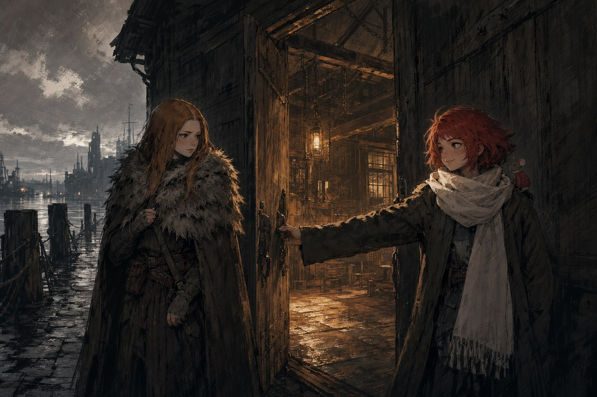
레비아탄이 물러간 뒤에도 도스크볼의 하늘은 한동안 젖어 있었지만, 비는 더 이상 검지 않았다. 히탐은 그 우두머리와 함께 무너졌다. 시 의회 의원이자 클레이브 선단의 계승자, 모든 거짓말을 꿰뚫어 보던 로슬린 켈리스가 부두의 의식소에서 죽었다는 사실을 아는 사람은 많지 않았고, 아는 사람들은 굳이 떠들지 않았다.
로릭은 두 번째 죽음을 맞았다. 이번에는 온전한 죽음이었고, 마지막 순간 그의 눈에 담긴 것은 원망도 갈증도 아닌 딸의 얼굴이었다. 그레이스는 아버지의 성 대신 단검이라는 이름을 남겨 들고 망나니즈를 이끌게 되었다. 키에란은 어딘가에 충성해야 살 수 있는 사람이라던 제 말대로, 마지막 충성을 다한 뒤 조용히 도스크볼을 떠났다.
베텔은 살아남았다. 십 년에 한 명 나온다는 체질을 제물로 바치는 대신, 사람들은 아이 곁에 무릎을 꿇는 쪽을 골랐고 그것으로 충분했다. 그리고 한 달 뒤, 케이트가 세이렌 상사의 문을 두드렸다. 푸른코트의 파란색도 붉은띠단의 붉은색도 끝내 그녀를 물들이지 못했으므로, 그녀는 사람을 지키는 일을 하러 왔다. 부두 남서쪽의 낡은 창고에는 그렇게 식구가 하나 늘었고, 인력 소개소의 간판은 오늘도 그 자리에 걸려 있다. 유령과 면역을 둘러싼 이야기는 여기서 한 번 막을 내렸다. 도스크볼이 다시 새로운 무뢰한들의 이야기를 필요로 하기까지는, 그로부터 2년이 더 걸린다.